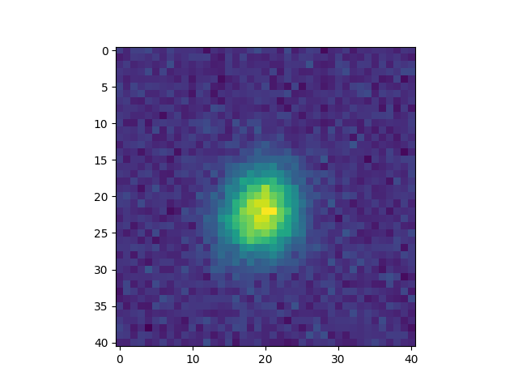
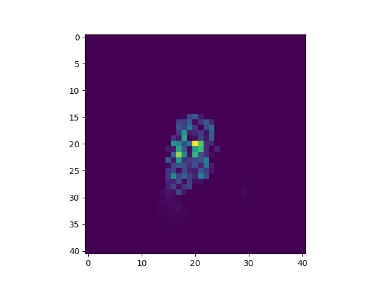

Galaxy Image Deconvolution
Contents
Note
Click here to download the full example code or to run this example in your browser via Binder
Galaxy Image Deconvolution#
Code author: Samuel Farrens <samuel.farrens@cea.fr>
In this tutorial we will deconvolve the PSF effects from an example galaxy image using the PySAP-Astro plug-in.
Import dependencies#
Import functions from PySAP and ModOpt.
import numpy as np
import matplotlib.pyplot as plt
from pysap.data import get_sample_data
from astro.deconvolution.deconvolve import sparse_deconv_condatvu
from modopt.signal.noise import add_noise
from modopt.math.convolve import convolve
Load astro data#
First, we load some example images from the PySAP sample data sets.
galaxy = get_sample_data('astro-galaxy')
psf = get_sample_data('astro-psf')
Then we can show the clean galaxy image that we will attempt to recover.
Out:
/volatile/Chaithya/actions-runner/_work/pysap/pysap/examples/pysap-astro/plot_galaxy_deconvolution.py:38: UserWarning: FigureCanvasAgg is non-interactive, and thus cannot be shown
plt.show()
Generate a noisy observation#
To simulate an observation we convolve the image with a point spread function
(PSF) using the ModOpt convolve
function. Then we add random Gaussian noise with standard deviation
0.0005 using the ModOpt
add_noise function.
obs_data = add_noise(convolve(galaxy.data, psf.data), sigma=0.0005)
Now we can show the noisy and blurred galaxy image.
Out:
/volatile/Chaithya/actions-runner/_work/pysap/pysap/examples/pysap-astro/plot_galaxy_deconvolution.py:56: UserWarning: FigureCanvasAgg is non-interactive, and thus cannot be shown
plt.show()
Deconvolve#
We will use the sparse_deconv_condatvu function from
PySAP-Astro to deconvolve the noisy image. We set the maximum number of
iterations for this function to 3000.
deconv_data = sparse_deconv_condatvu(obs_data, psf.data, n_iter=3000)
Out:
WARNING: Making input data immutable.
0%| | 0/3000 [00:00<?, ?it/s]
0%| | 12/3000 [00:00<00:25, 117.22it/s]
1%| | 24/3000 [00:00<00:25, 117.75it/s]
1%|1 | 36/3000 [00:00<00:25, 118.45it/s]
2%|1 | 48/3000 [00:00<00:24, 118.60it/s]
2%|2 | 60/3000 [00:00<00:24, 118.41it/s]
2%|2 | 72/3000 [00:00<00:24, 118.09it/s]
3%|2 | 84/3000 [00:00<00:24, 117.44it/s]
3%|3 | 96/3000 [00:00<00:24, 118.05it/s]
4%|3 | 108/3000 [00:00<00:24, 117.72it/s]
4%|4 | 120/3000 [00:01<00:24, 118.12it/s]
4%|4 | 132/3000 [00:01<00:24, 118.59it/s]
5%|4 | 145/3000 [00:01<00:23, 119.36it/s]
5%|5 | 157/3000 [00:01<00:23, 119.53it/s]
6%|5 | 169/3000 [00:01<00:24, 116.60it/s]
6%|6 | 182/3000 [00:01<00:23, 117.86it/s]
6%|6 | 194/3000 [00:01<00:23, 118.19it/s]
7%|6 | 206/3000 [00:01<00:23, 118.55it/s]
7%|7 | 219/3000 [00:01<00:23, 118.95it/s]
8%|7 | 232/3000 [00:01<00:23, 119.64it/s]
8%|8 | 244/3000 [00:02<00:23, 119.48it/s]
9%|8 | 257/3000 [00:02<00:22, 119.84it/s]
9%|8 | 269/3000 [00:02<00:22, 119.71it/s]
9%|9 | 281/3000 [00:02<00:22, 119.76it/s]
10%|9 | 293/3000 [00:02<00:22, 119.38it/s]
10%|# | 305/3000 [00:02<00:22, 119.21it/s]
11%|# | 317/3000 [00:02<00:22, 119.08it/s]
11%|# | 329/3000 [00:02<00:22, 118.92it/s]
11%|#1 | 342/3000 [00:02<00:22, 119.14it/s]
12%|#1 | 354/3000 [00:02<00:22, 119.22it/s]
12%|#2 | 366/3000 [00:03<00:22, 119.28it/s]
13%|#2 | 378/3000 [00:03<00:21, 119.25it/s]
13%|#3 | 391/3000 [00:03<00:21, 119.81it/s]
13%|#3 | 404/3000 [00:03<00:21, 120.15it/s]
14%|#3 | 417/3000 [00:03<00:21, 119.67it/s]
14%|#4 | 430/3000 [00:03<00:21, 119.96it/s]
15%|#4 | 442/3000 [00:03<00:21, 118.98it/s]
15%|#5 | 454/3000 [00:03<00:24, 103.65it/s]
16%|#5 | 465/3000 [00:04<00:27, 92.20it/s]
16%|#5 | 475/3000 [00:04<00:27, 92.39it/s]
16%|#6 | 486/3000 [00:04<00:26, 96.12it/s]
17%|#6 | 498/3000 [00:04<00:24, 100.67it/s]
17%|#7 | 510/3000 [00:04<00:23, 105.31it/s]
17%|#7 | 522/3000 [00:04<00:22, 109.13it/s]
18%|#7 | 534/3000 [00:04<00:22, 111.43it/s]
18%|#8 | 546/3000 [00:04<00:21, 112.65it/s]
19%|#8 | 558/3000 [00:04<00:21, 113.72it/s]
19%|#9 | 570/3000 [00:04<00:21, 115.15it/s]
19%|#9 | 582/3000 [00:05<00:20, 116.22it/s]
20%|#9 | 594/3000 [00:05<00:20, 117.23it/s]
20%|## | 606/3000 [00:05<00:20, 117.61it/s]
21%|## | 618/3000 [00:05<00:20, 116.27it/s]
21%|##1 | 630/3000 [00:05<00:20, 116.73it/s]
21%|##1 | 642/3000 [00:05<00:20, 117.41it/s]
22%|##1 | 654/3000 [00:05<00:19, 117.92it/s]
22%|##2 | 667/3000 [00:05<00:19, 118.73it/s]
23%|##2 | 679/3000 [00:05<00:19, 118.74it/s]
23%|##3 | 691/3000 [00:05<00:19, 118.52it/s]
23%|##3 | 703/3000 [00:06<00:19, 118.31it/s]
24%|##3 | 715/3000 [00:06<00:19, 118.17it/s]
24%|##4 | 727/3000 [00:06<00:19, 117.93it/s]
25%|##4 | 739/3000 [00:06<00:19, 117.44it/s]
25%|##5 | 751/3000 [00:06<00:19, 117.33it/s]
25%|##5 | 763/3000 [00:06<00:19, 117.64it/s]
26%|##5 | 775/3000 [00:06<00:18, 118.05it/s]
26%|##6 | 787/3000 [00:06<00:18, 118.43it/s]
27%|##6 | 799/3000 [00:06<00:18, 118.30it/s]
27%|##7 | 811/3000 [00:06<00:18, 118.38it/s]
27%|##7 | 823/3000 [00:07<00:18, 118.46it/s]
28%|##7 | 835/3000 [00:07<00:18, 118.58it/s]
28%|##8 | 847/3000 [00:07<00:18, 118.33it/s]
29%|##8 | 859/3000 [00:07<00:18, 117.70it/s]
29%|##9 | 871/3000 [00:07<00:18, 117.84it/s]
29%|##9 | 883/3000 [00:07<00:17, 118.40it/s]
30%|##9 | 895/3000 [00:07<00:17, 118.67it/s]
30%|### | 907/3000 [00:07<00:17, 118.84it/s]
31%|### | 920/3000 [00:07<00:17, 119.34it/s]
31%|###1 | 933/3000 [00:08<00:17, 119.58it/s]
32%|###1 | 945/3000 [00:08<00:17, 119.06it/s]
32%|###1 | 957/3000 [00:08<00:17, 118.54it/s]
32%|###2 | 969/3000 [00:08<00:17, 118.18it/s]
33%|###2 | 981/3000 [00:08<00:17, 118.40it/s]
33%|###3 | 993/3000 [00:08<00:16, 118.77it/s]
34%|###3 | 1005/3000 [00:08<00:16, 118.93it/s]
34%|###3 | 1017/3000 [00:08<00:16, 119.00it/s]
34%|###4 | 1030/3000 [00:08<00:16, 119.17it/s]
35%|###4 | 1042/3000 [00:08<00:16, 119.13it/s]
35%|###5 | 1054/3000 [00:09<00:16, 119.33it/s]
36%|###5 | 1067/3000 [00:09<00:16, 119.82it/s]
36%|###6 | 1080/3000 [00:09<00:16, 119.69it/s]
36%|###6 | 1093/3000 [00:09<00:15, 120.24it/s]
37%|###6 | 1106/3000 [00:09<00:15, 120.14it/s]
37%|###7 | 1119/3000 [00:09<00:15, 120.95it/s]
38%|###7 | 1132/3000 [00:09<00:15, 120.74it/s]
38%|###8 | 1145/3000 [00:09<00:15, 121.29it/s]
39%|###8 | 1158/3000 [00:09<00:15, 121.72it/s]
39%|###9 | 1171/3000 [00:10<00:15, 121.63it/s]
39%|###9 | 1184/3000 [00:10<00:15, 120.92it/s]
40%|###9 | 1197/3000 [00:10<00:14, 120.80it/s]
40%|#### | 1210/3000 [00:10<00:14, 121.29it/s]
41%|#### | 1223/3000 [00:10<00:14, 121.19it/s]
41%|####1 | 1236/3000 [00:10<00:14, 121.70it/s]
42%|####1 | 1249/3000 [00:10<00:14, 121.74it/s]
42%|####2 | 1262/3000 [00:10<00:14, 121.74it/s]
42%|####2 | 1275/3000 [00:10<00:14, 122.05it/s]
43%|####2 | 1288/3000 [00:10<00:14, 121.75it/s]
43%|####3 | 1301/3000 [00:11<00:13, 121.81it/s]
44%|####3 | 1314/3000 [00:11<00:13, 121.99it/s]
44%|####4 | 1327/3000 [00:11<00:13, 121.77it/s]
45%|####4 | 1340/3000 [00:11<00:13, 122.00it/s]
45%|####5 | 1353/3000 [00:11<00:13, 121.75it/s]
46%|####5 | 1366/3000 [00:11<00:13, 121.77it/s]
46%|####5 | 1379/3000 [00:11<00:13, 121.70it/s]
46%|####6 | 1392/3000 [00:11<00:13, 121.83it/s]
47%|####6 | 1405/3000 [00:11<00:13, 121.90it/s]
47%|####7 | 1418/3000 [00:12<00:12, 122.23it/s]
48%|####7 | 1431/3000 [00:12<00:12, 121.94it/s]
48%|####8 | 1444/3000 [00:12<00:12, 121.99it/s]
49%|####8 | 1457/3000 [00:12<00:12, 121.88it/s]
49%|####9 | 1470/3000 [00:12<00:12, 121.74it/s]
49%|####9 | 1483/3000 [00:12<00:12, 122.20it/s]
50%|####9 | 1496/3000 [00:12<00:12, 121.40it/s]
50%|##### | 1509/3000 [00:12<00:12, 121.78it/s]
51%|##### | 1522/3000 [00:12<00:12, 121.58it/s]
51%|#####1 | 1535/3000 [00:12<00:12, 121.64it/s]
52%|#####1 | 1548/3000 [00:13<00:11, 121.56it/s]
52%|#####2 | 1561/3000 [00:13<00:11, 121.98it/s]
52%|#####2 | 1574/3000 [00:13<00:11, 122.10it/s]
53%|#####2 | 1587/3000 [00:13<00:11, 121.87it/s]
53%|#####3 | 1600/3000 [00:13<00:11, 121.95it/s]
54%|#####3 | 1613/3000 [00:13<00:11, 120.55it/s]
54%|#####4 | 1626/3000 [00:13<00:11, 120.78it/s]
55%|#####4 | 1639/3000 [00:13<00:11, 120.82it/s]
55%|#####5 | 1652/3000 [00:13<00:11, 121.32it/s]
56%|#####5 | 1665/3000 [00:14<00:11, 121.04it/s]
56%|#####5 | 1678/3000 [00:14<00:10, 121.10it/s]
56%|#####6 | 1691/3000 [00:14<00:10, 121.36it/s]
57%|#####6 | 1704/3000 [00:14<00:10, 121.38it/s]
57%|#####7 | 1717/3000 [00:14<00:10, 121.08it/s]
58%|#####7 | 1730/3000 [00:14<00:10, 120.64it/s]
58%|#####8 | 1743/3000 [00:14<00:10, 120.35it/s]
59%|#####8 | 1756/3000 [00:14<00:10, 120.33it/s]
59%|#####8 | 1769/3000 [00:14<00:10, 120.55it/s]
59%|#####9 | 1782/3000 [00:15<00:10, 121.17it/s]
60%|#####9 | 1795/3000 [00:15<00:09, 121.03it/s]
60%|###### | 1808/3000 [00:15<00:09, 121.22it/s]
61%|###### | 1821/3000 [00:15<00:09, 121.22it/s]
61%|######1 | 1834/3000 [00:15<00:09, 121.29it/s]
62%|######1 | 1847/3000 [00:15<00:09, 121.03it/s]
62%|######2 | 1860/3000 [00:15<00:09, 121.00it/s]
62%|######2 | 1873/3000 [00:15<00:09, 121.42it/s]
63%|######2 | 1886/3000 [00:15<00:09, 121.32it/s]
63%|######3 | 1899/3000 [00:15<00:09, 121.72it/s]
64%|######3 | 1912/3000 [00:16<00:08, 121.40it/s]
64%|######4 | 1925/3000 [00:16<00:08, 121.70it/s]
65%|######4 | 1938/3000 [00:16<00:08, 121.93it/s]
65%|######5 | 1951/3000 [00:16<00:08, 121.76it/s]
65%|######5 | 1964/3000 [00:16<00:08, 122.03it/s]
66%|######5 | 1977/3000 [00:16<00:08, 121.75it/s]
66%|######6 | 1990/3000 [00:16<00:08, 121.93it/s]
67%|######6 | 2003/3000 [00:16<00:08, 121.97it/s]
67%|######7 | 2016/3000 [00:16<00:08, 121.49it/s]
68%|######7 | 2029/3000 [00:17<00:07, 121.78it/s]
68%|######8 | 2042/3000 [00:17<00:07, 121.61it/s]
68%|######8 | 2055/3000 [00:17<00:07, 121.84it/s]
69%|######8 | 2068/3000 [00:17<00:07, 122.05it/s]
69%|######9 | 2081/3000 [00:17<00:07, 121.06it/s]
70%|######9 | 2094/3000 [00:17<00:07, 120.39it/s]
70%|####### | 2107/3000 [00:17<00:07, 120.57it/s]
71%|####### | 2120/3000 [00:17<00:07, 121.05it/s]
71%|#######1 | 2133/3000 [00:17<00:07, 120.45it/s]
72%|#######1 | 2146/3000 [00:18<00:07, 120.91it/s]
72%|#######1 | 2159/3000 [00:18<00:07, 119.61it/s]
72%|#######2 | 2172/3000 [00:18<00:06, 120.11it/s]
73%|#######2 | 2185/3000 [00:18<00:06, 120.56it/s]
73%|#######3 | 2198/3000 [00:18<00:06, 120.83it/s]
74%|#######3 | 2211/3000 [00:18<00:06, 121.07it/s]
74%|#######4 | 2224/3000 [00:18<00:06, 121.14it/s]
75%|#######4 | 2237/3000 [00:18<00:06, 121.40it/s]
75%|#######5 | 2250/3000 [00:18<00:06, 121.20it/s]
75%|#######5 | 2263/3000 [00:19<00:06, 121.49it/s]
76%|#######5 | 2276/3000 [00:19<00:05, 121.24it/s]
76%|#######6 | 2289/3000 [00:19<00:05, 121.52it/s]
77%|#######6 | 2302/3000 [00:19<00:05, 121.49it/s]
77%|#######7 | 2315/3000 [00:19<00:05, 121.45it/s]
78%|#######7 | 2328/3000 [00:19<00:05, 121.58it/s]
78%|#######8 | 2341/3000 [00:19<00:05, 121.48it/s]
78%|#######8 | 2354/3000 [00:19<00:05, 121.27it/s]
79%|#######8 | 2367/3000 [00:19<00:05, 121.31it/s]
79%|#######9 | 2380/3000 [00:19<00:05, 121.65it/s]
80%|#######9 | 2393/3000 [00:20<00:04, 121.77it/s]
80%|######## | 2406/3000 [00:20<00:04, 121.64it/s]
81%|######## | 2419/3000 [00:20<00:04, 121.51it/s]
81%|########1 | 2432/3000 [00:20<00:04, 121.45it/s]
82%|########1 | 2445/3000 [00:20<00:04, 121.57it/s]
82%|########1 | 2451/3000 [00:20<00:04, 119.23it/s]
0%| | 0/3000 [00:00<?, ?it/s]
0%| | 12/3000 [00:00<00:25, 118.22it/s]
1%| | 24/3000 [00:00<00:25, 118.51it/s]
1%|1 | 36/3000 [00:00<00:24, 118.95it/s]
2%|1 | 48/3000 [00:00<00:24, 118.72it/s]
2%|2 | 61/3000 [00:00<00:24, 119.65it/s]
2%|2 | 73/3000 [00:00<00:24, 119.59it/s]
3%|2 | 85/3000 [00:00<00:24, 118.98it/s]
3%|3 | 98/3000 [00:00<00:24, 119.51it/s]
4%|3 | 110/3000 [00:00<00:24, 118.95it/s]
4%|4 | 122/3000 [00:01<00:24, 119.20it/s]
4%|4 | 134/3000 [00:01<00:24, 119.05it/s]
5%|4 | 147/3000 [00:01<00:23, 119.52it/s]
5%|5 | 159/3000 [00:01<00:23, 119.59it/s]
6%|5 | 171/3000 [00:01<00:23, 119.37it/s]
6%|6 | 183/3000 [00:01<00:23, 119.52it/s]
6%|6 | 195/3000 [00:01<00:23, 119.40it/s]
7%|6 | 208/3000 [00:01<00:23, 119.90it/s]
7%|7 | 220/3000 [00:01<00:23, 119.62it/s]
8%|7 | 232/3000 [00:01<00:23, 119.47it/s]
8%|8 | 245/3000 [00:02<00:23, 119.51it/s]
9%|8 | 257/3000 [00:02<00:22, 119.28it/s]
9%|8 | 269/3000 [00:02<00:22, 119.49it/s]
9%|9 | 282/3000 [00:02<00:22, 120.00it/s]
10%|9 | 294/3000 [00:02<00:22, 119.83it/s]
10%|# | 306/3000 [00:02<00:22, 119.64it/s]
11%|# | 318/3000 [00:02<00:22, 119.57it/s]
11%|#1 | 330/3000 [00:02<00:22, 119.47it/s]
11%|#1 | 342/3000 [00:02<00:22, 119.41it/s]
12%|#1 | 354/3000 [00:02<00:22, 119.52it/s]
12%|#2 | 366/3000 [00:03<00:22, 118.82it/s]
13%|#2 | 378/3000 [00:03<00:22, 118.92it/s]
13%|#3 | 391/3000 [00:03<00:21, 119.71it/s]
13%|#3 | 403/3000 [00:03<00:21, 119.38it/s]
14%|#3 | 415/3000 [00:03<00:21, 118.77it/s]
14%|#4 | 427/3000 [00:03<00:21, 118.47it/s]
15%|#4 | 439/3000 [00:03<00:21, 118.85it/s]
15%|#5 | 451/3000 [00:03<00:21, 118.84it/s]
15%|#5 | 463/3000 [00:03<00:21, 118.13it/s]
16%|#5 | 475/3000 [00:03<00:21, 118.57it/s]
16%|#6 | 487/3000 [00:04<00:21, 118.53it/s]
17%|#6 | 499/3000 [00:04<00:21, 118.74it/s]
17%|#7 | 511/3000 [00:04<00:21, 118.30it/s]
17%|#7 | 523/3000 [00:04<00:20, 118.72it/s]
18%|#7 | 536/3000 [00:04<00:20, 119.42it/s]
18%|#8 | 548/3000 [00:04<00:20, 119.33it/s]
19%|#8 | 560/3000 [00:04<00:20, 119.24it/s]
19%|#9 | 573/3000 [00:04<00:20, 119.42it/s]
20%|#9 | 585/3000 [00:04<00:20, 119.24it/s]
20%|#9 | 597/3000 [00:05<00:20, 119.24it/s]
20%|## | 609/3000 [00:05<00:20, 119.06it/s]
21%|## | 621/3000 [00:05<00:20, 118.94it/s]
21%|##1 | 633/3000 [00:05<00:19, 119.20it/s]
22%|##1 | 645/3000 [00:05<00:19, 119.27it/s]
22%|##1 | 658/3000 [00:05<00:19, 119.53it/s]
22%|##2 | 671/3000 [00:05<00:19, 119.90it/s]
23%|##2 | 683/3000 [00:05<00:19, 119.78it/s]
23%|##3 | 695/3000 [00:05<00:19, 119.84it/s]
24%|##3 | 707/3000 [00:05<00:19, 119.46it/s]
24%|##4 | 720/3000 [00:06<00:19, 119.44it/s]
24%|##4 | 732/3000 [00:06<00:19, 119.21it/s]
25%|##4 | 744/3000 [00:06<00:18, 119.33it/s]
25%|##5 | 756/3000 [00:06<00:18, 119.37it/s]
26%|##5 | 768/3000 [00:06<00:18, 119.26it/s]
26%|##6 | 781/3000 [00:06<00:18, 119.70it/s]
26%|##6 | 793/3000 [00:06<00:18, 119.65it/s]
27%|##6 | 806/3000 [00:06<00:18, 119.63it/s]
27%|##7 | 819/3000 [00:06<00:18, 119.80it/s]
28%|##7 | 831/3000 [00:06<00:18, 119.47it/s]
28%|##8 | 843/3000 [00:07<00:18, 119.45it/s]
28%|##8 | 855/3000 [00:07<00:18, 118.55it/s]
29%|##8 | 867/3000 [00:07<00:17, 118.89it/s]
29%|##9 | 879/3000 [00:07<00:17, 119.05it/s]
30%|##9 | 891/3000 [00:07<00:17, 119.30it/s]
30%|### | 903/3000 [00:07<00:17, 119.26it/s]
31%|### | 916/3000 [00:07<00:17, 119.76it/s]
31%|### | 919/3000 [00:07<00:17, 119.15it/s]
We can show the deconvolved galaxy image.
Out:
/volatile/Chaithya/actions-runner/_work/pysap/pysap/examples/pysap-astro/plot_galaxy_deconvolution.py:73: UserWarning: FigureCanvasAgg is non-interactive, and thus cannot be shown
plt.show()
Residual#
Next, we calculate the residual of our deconvolved image to get a measure of how well the deconvolution process performed.
Finally, we can show the residual.
Out:
/volatile/Chaithya/actions-runner/_work/pysap/pysap/examples/pysap-astro/plot_galaxy_deconvolution.py:88: UserWarning: FigureCanvasAgg is non-interactive, and thus cannot be shown
plt.show()
Tip
Typically for a denoising problem we are aiming for a residual without any structure, i.e. just noise.
Total running time of the script: ( 0 minutes 28.996 seconds)